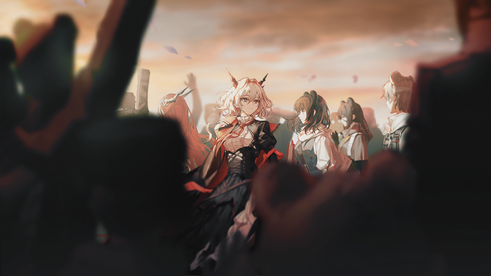
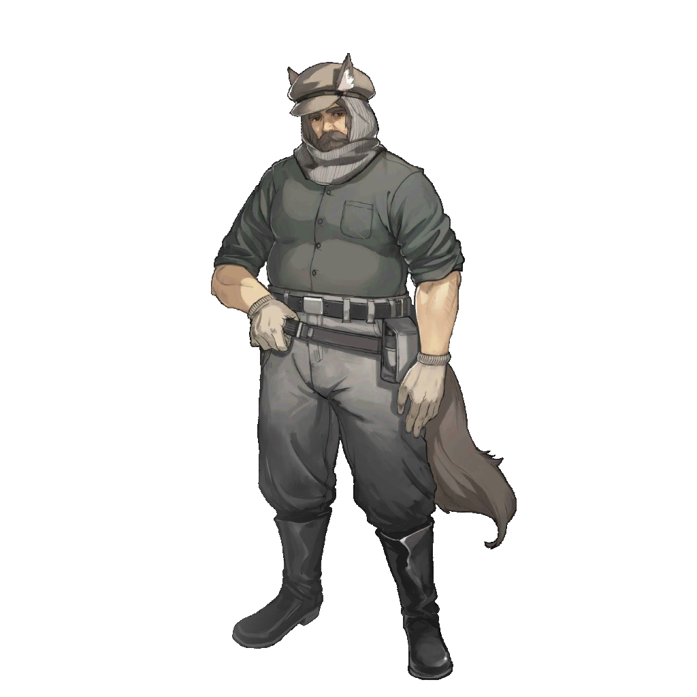

晖洁：
我苦苦思索该怎样向你讲述这个故事的结局，当我为落笔困顿至极时才恍然明白，原来这个故事还远未结束。
所以当我想向你倾诉这一路走来的心绪时，我们还得回溯到故事的开头。
我最近时常回忆起我们共同度过的童年时光，虽然那是一段阴霾笼罩的日子，但也有令人怀念的部分。
比如当我在那些恶霸的面前把你护到身后时，我真的相信自己轻而易举地就可以成为一个伟大的斗士。
我心里那一点微小的“正义感”，也许就是在这个时候开始发芽的。
我不停地向自己追问——我们究竟为这片大地带来了什么？
晖洁，我做了一个梦。

我梦见我们和很多人站在一起，人们呼唤着我们的名字，就好像一直以来都是如此。
燃起一场大火，升起一面旗帜……这些事固然令人欣喜，但不适合作为结局的句点。
那太容易让人们相信胜利就是如此地理所应当，而忽视了我们一路走来的那些曲折、不堪以及惨烈的牺牲。
……继而忘记了我们经历的是一场漫长的，自内而外的革命。
胜利的来之不易，让我不止一次地怀疑它是否只是巧合，让“好运气”变成这个故事最后的注脚。
我现在无法得出答案，我需要更长久的时间，让一千年后的人们来告诉我。
原来我们在圣骏堡点燃的，不只是来自于我心中的火。
在这片冻土之下，有一团无法熄灭的火焰，永远属于这片大地上的每一个人。
我们已经忍耐过了最寒冷的严冬，现在是时候拿回推开窗的勇气了。
推开窗看看吧。
春天已经到了。
米拉娜
……我们的政府承诺，将致力于解决当下的源石危机……
米拉娜
……新的法律，将给每一个乌萨斯人都带来机会……

柳德米拉
时间差不多了，还没有好吗？

米拉娜
柳德米拉小姐，谢谢你帮我准备讲稿，可现在还需要你帮我一个忙……

米拉娜
这段时间以来我的视力好像越来越差了……也许这间屋子里还能找到一副合适的眼镜？

柳德米拉
都到了这个时候，怎么反倒没了气魄……
柳德米拉
你以为一会坐在台下的都是什么人？
米拉娜
来自圣骏堡各个区域的市民代表，各行各业的领袖。
柳德米拉
还有抱着自己的利益不肯撒手的老顽固，等着看伊凡·图林笑话的守旧派。
米拉娜
他们的共同点是，都是需要我们给予信心的人们。

柳德米拉
我更在意的是……你确定不要换一身衣服？

米拉娜
不……不用了。
米拉娜
是时候提醒人们，不是只有穿着得光鲜亮丽的人才有资格代表这个国家。
柳德米拉
……也好。
柳德米拉
精神点，你是整合运动的代表，是推翻了旧帝国的英雄，没什么好紧张的。

米拉娜
你说……得对……
米拉娜
（深呼吸）
米拉娜
我这就去……
柳德米拉
……米拉娜。

米拉娜
怎么了？

柳德米拉
只有最后一件事……
柳德米拉
走出这扇门后，“米拉娜”这个名字，就真的不复存在了。
米拉娜
应该，是这样的。
米拉娜
这也是我曾经许下的承诺。
米拉娜
……为了我们共同的朋友。
柳德米拉
……

柳德米拉
你好，“伊凡·图林”。
伊凡·图林
你好。我志同道合的朋友。
今天，我站在这里，向所有人宣布，一个新的，属于每一个乌萨斯人民的政府的成立。
这个国家的新生建立在一个巨大的危机下，我们面临着前所未有的挑战。
我们不会承诺这样的危机可以被轻易解决，首先需要谈论的是，我们将以什么样的姿态来面对这样的威胁。
第一条不可动摇的信条是，这是属于所有人的国家。
没有人会因为自己的出身，而比另一个人拥有更多的权利。
乌萨斯的法律，不再区别对待感染者和普通人。我们共同为建设乌萨斯付出的劳动让我们有了一样的名字。
若不幸的意外降临在我们的同胞身上，这绝不会使他的人格变得卑劣。这是我们首先要达成的共识。
相反，我们应当积极帮助受病痛折磨的同胞，为这种在这片大地上最广为传播的疾病寻求解药。
新的乌萨斯将对内对外都积极寻求合作，共同面对源石矿脉枯竭这一前所未有的威胁。
直到我们发现解决问题的手段，直到“平等”不再只是空谈的概念，而能够深深扎根在这片大地的每一个角落。

伊奥莱塔·罗素
不得不承认，当我第一次听到这样的谈判邀约，我只认为是一个荒唐的玩笑。

伊奥莱塔·罗素
很高兴见到您，尊敬的维娜议长。

维娜
久仰大名，罗素阁下。
维娜
几年前议会收到了您送上的贺信，感谢您的支持，维多利亚人民很重视同您的友谊。
伊奥莱塔·罗素
有机会的话，我很想亲自拜访您的国家。

伊奥莱塔·罗素
我也很好奇，伦蒂尼姆早春的天气如何？
维娜
都还不错，只有下个不停的春雨很恼人。

维娜
气候越来越潮湿了，用不了多久，存在仓库的小零件又得锈一批。

伊奥莱塔·罗素
可是没有这些雨水浇灌麦田，卡西米尔的粮食恐怕就要被商人们炒上天价。

伊奥莱塔·罗素
不同的国家对这片大地的索求各不相同，后者对生存其上的每一个人又是平等地残酷。
伊奥莱塔·罗素
所以我更加好奇，我们尊贵的朋友，准备如何促成这一场谈判？
PLAYER CHOICE // 玩家选项
[1]正如您所说——
[2]这片大地对每一个人都是严苛的。
【以下剧情 · 对应上述任一选项后的接续】
PLAYER CHOICE // 玩家选项
[1]在达成了这一点共识后……
[2]想必我们的交谈不会太困难。
【以下剧情 · 对应上述任一选项后的接续】
PLAYER CHOICE // 玩家选项
[1]又见面了，维娜。
[2]好久不见，大骑士长阁下。
【以下剧情 · 对应上述任一选项后的接续】
维娜
赫拉格先生，原来您是乌萨斯方的代表。

赫拉格
不……我只是作为Dr.{@nickname}的护卫。
赫拉格
我们的领袖暂时无法从繁杂的事务中脱身，所以将谈判全权委托给了博士。
PLAYER CHOICE // 玩家选项
[1]不胜惶恐。
[2]所以我由衷地希望，今天的谈判可以取得成果。
【以下剧情 · 对应上述任一选项后的接续】

伊奥莱塔·罗素
真有趣，你们将这里选作了谈判地点，应该不是无心之举？
伊奥莱塔·罗素
上百年来，卡西米尔与乌萨斯争夺最激烈的土地。这里的每一棵野草，都是两方战士的鲜血浇灌的。
伊奥莱塔·罗素
那位乌萨斯的将军，对此应该更有体悟？

赫拉格
当然……
赫拉格
不过我想让您知道的是，在这个冬天，乌萨斯的人民战胜了一个延续了上千年的强权。
赫拉格
我们愿意相信，在两国共同的努力下，我们也可以跨过这上百年的仇恨。

赫拉格
为了我们共同的，更长远的未来。
PLAYER CHOICE // 玩家选项
[1]科罗萨主矿脉的枯竭将对整个泰拉产生巨大的影响。
[2]这是任何一个国家都无法独立面对的难题。
【以下剧情 · 对应上述任一选项后的接续】
PLAYER CHOICE // 玩家选项
[1]所以我们希望……
【以下剧情 · 对应上述任一选项后的接续】
PLAYER CHOICE // 玩家选项
[1]在整个泰拉范围内——
[2]建立起源石资源的合作分配机制。
【以下剧情 · 对应上述任一选项后的接续】

维娜
博士，你是说，整个泰拉？
伊奥莱塔·罗素
罗德岛的朋友，你应该知道这句话的分量。
PLAYER CHOICE // 玩家选项
[1]我们深知这项计划的困难。
[2]所以二位是我们最先想到的可以合作的伙伴。
【以下剧情 · 对应上述任一选项后的接续】
伊奥莱塔·罗素
Dr.{@nickname}，在上一次见面时，我对你的印象是一个有政治头脑的商人。
伊奥莱塔·罗素
你应该知道，当一个曾经强盛的国家衰弱时，“和平”不是可以靠索求就能得到的。
PLAYER CHOICE // 玩家选项
[1]我们带来的是一场平等的合作邀请。
[2]而“和平”，会是这场合作的结果。
【以下剧情 · 对应上述任一选项后的接续】
伊奥莱塔·罗素
你有信心促成这样的合作？
PLAYER CHOICE // 玩家选项
[1]当然。
【以下剧情 · 对应上述任一选项后的接续】
PLAYER CHOICE // 玩家选项
[1]罗德岛始终相信——
[2]有一种深深刻在我们的文明中的本能。
【以下剧情 · 对应上述任一选项后的接续】
PLAYER CHOICE // 玩家选项
[1]我们总是能够克服短视、自私与卑劣。
[2]选择艰难，但是正确的道路。
【以下剧情 · 对应上述任一选项后的接续】
PLAYER CHOICE // 玩家选项
[1]只因我们见过太多这样的事例。
【以下剧情 · 对应上述任一选项后的接续】
PLAYER CHOICE // 玩家选项
[1]无论是伦蒂尼姆上空刺破阴霾的光辉。
[2]还是这个冬天圣骏堡燃起的大火……
【以下剧情 · 对应上述任一选项后的接续】
赫拉格
……
维娜
我们同样相信。
PLAYER CHOICE // 玩家选项
[1]当然，除了这些基本的信念。
【以下剧情 · 对应上述任一选项后的接续】
PLAYER CHOICE // 玩家选项
[1]罗德岛愿意和乌萨斯新政府一起给出合作的诚意。
【以下剧情 · 对应上述任一选项后的接续】
PLAYER CHOICE // 玩家选项
[1]乌萨斯会与各国分享关于“石棺”的技术。
【以下剧情 · 对应上述任一选项后的接续】
PLAYER CHOICE // 玩家选项
[1]而罗德岛……会与各国分享源石的知识。
【以下剧情 · 对应上述任一选项后的接续】
年轻的工人
这些源石矿，真的是卡西米尔人送给我们的？我们不是死对头吗？
年迈的工人
哪能是白送呢？这也是我们要拿粮食，拿赤金跟他们换的。
年迈的工人
将来我们还要跟雷姆必拓，跟炎国人做生意……真是活得够久，什么稀奇事都能见到。原来乌萨斯人也这么会做生意。
年轻的工人
要说稀奇事，那还得是……唉，我原来也想不到我们居然还能和感染者一起上工。
感染者工人
你有什么意见？感染者和普通人同工同酬，这可是图林说的。

别乔克
哥，哥……叔叔们，不要吵架。

别乔克
大家……都是，战友……伙伴。
年轻的工人
别误会！我没想吵架。
年轻的工人
我只是担心，你们得了病，体力跟得上吗？
感染者工人
用不着你操心，我们只是平时吃住要区分开，干活的时候一样卖力气。
年轻的工人
也是……图林说一些基本的隔离是必要的。
年轻的工人
不过这不代表我们不能握手。
两只手紧紧握在了一起。
两名工人穿着一样的工服，仅有的区别，是其中一人的左臂上，系着一枚小小的十字形红色绳结。
年迈的工人
我说，你们谁去修一下咱们工厂大门口的牌子，仗都打完多少天了，还在那坏着。
年轻的工人
“圣骏堡皇家源石精炼厂”……可是现在都没有皇帝了，咱们工厂是不是也得换个名字？
别乔克想起在战争中消失的那些人，想起那些或黢黑或光洁的、无论如何都曾鲜活过的面庞。
最后，随着思绪的短暂飘忽，她的目光，停在了众人身后的不远处。
一个黑色的身影，正默然伫立在那里。
别乔克
我……我有一个，提议。
别乔克
这是……新乌萨斯，第一个开工的，工厂。

别乔克
工厂的名字，可以叫……
别乔克
“雷尔金”吗？

安托沙
……你还是来了。

奥尔佳
嗯……如果这是你在圣骏堡待的最后一天，我找不到不来送别你的理由。
安托沙
别担心，只是我不知道会在南方待多久，有许多朋友愿意和我一起离开，我也很满足了。
安托沙
我听说图林给你安排了职务，奥尔佳。

奥尔佳
在新成立的外交部工作，图林需要一个旧贵族的语言知识与眼界。
安托沙
……想必你会做得很好。

安托沙
就凭你能在叶莉萨维塔那样的人面前，忍住不拧断她的脖子……我就知道你是一位天赋异禀的外交官。
奥尔佳
安托沙……
奥尔佳
今天，我签了捐赠家族庄园与领地的协议，图林告诉我，她打算改建成一所新的大学。
奥尔佳
我只提出了一个要求，这所新大学的校舍，名称是“彼得拉设夫斯基”。
奥尔佳
而在校园的门口，会建一座纪念碑。

安托沙
……这是前些天，你借走我的笔记的原因吗？
奥尔佳
是的。

奥尔佳
当未来的学生踏进那所校园的时候，他们就会看见，所有曾与你并肩作战过的名字。

安托沙
……
安托沙
这是件了不起的事……我很感激……

奥尔佳
我只是提了意见。图林说，她十分愿意让人们铭记那些真正的英雄。

安托沙
图林……
米拉娜
……能再考虑一下吗？安托沙。
米拉娜
我原想让你继续领导工会，圣骏堡的工人都很信服你，你可以为新的国家做到更多。
安托沙
感谢你的看重，图林，但我并没有准备好。
安托沙
不久前，我的冒进付出了代价……我承受不起的代价。
安托沙
你的能力和阅历，都比我更适合带领工会，而我只想尽快回到生产里去。
安托沙
所以我恳请你，允许我带上一些朋友，去南方开垦田地。
米拉娜
……一个革命英雄的请求，我很难拒绝。
米拉娜
如此说来，或许你也不愿加入我们正在筹备的党派了。

安托沙
原谅我的冒昧，图林……
安托沙
我一直有个疑问，没能在任何书里得到答案。
米拉娜
请说。
安托沙
我的祖父是佃农，他杀了欺压自己的地主，后来被封为伯爵。
安托沙
我从小就看着他，一个受过压迫的人翻身之后，转眼便去戕害别的被压迫者，变本加厉。

安托沙
那么整合运动呢？感染者呢？当他们掌握了剑与法律，会怎样对待新的被压迫者？
米拉娜
……
安托沙
如若我们接过了宰制乌萨斯的帝国机器，却只是给它涂上一层红漆——那么多牺牲，又是为了什么？
米拉娜
……朋友，我可以向你描绘一种畅想。
米拉娜
有一天，所有人都能各尽所能、各取所需，不再会有新的被压迫者。
米拉娜
同样，我也想向你讲述一个事实。眼下，我们需要这台机器，去扫清顽抗的贵族，去保护受尽欺压的人。
米拉娜
所以我需要你们，整合运动需要你们。
米拉娜
因为你们——每一个乌萨斯人，是整合运动坚持至此的唯一答案。
安托沙
……我愿意相信你，图林，但是未来？
米拉娜
安托沙，我年轻的朋友，你是否忘了……
米拉娜
你才是属于未来的人，我知道，你不会让后来者忘记我们的理想。
米拉娜
我也如此相信着你。
安托沙
……
？？？
嘿——
安托沙
……是谁？
安托沙
乌克西克？！说过不要再吓人了——

乌克西克
这不是闲着了嘛，人人一大堆行李要收拾，不闹点动静好没意思。
安托沙
……我要把你送回罗德岛。

乌克西克
我们重新见面才几天啊，你就这么嫌弃我……？
安托沙
才不——唉……
他上前一步，搂住了瘦削的女孩，而女孩也安静了下来，她的手抚上了安托沙的后背。
安托沙
罗德岛……他们对你好不好？
乌克西克
……他们很好，我喜欢那里，每天都会认识许多新的朋友。
乌克西克
博士和大家，都很关心我。
安托沙
那就好……
安托沙
答应我，你要一直健健康康，等到病好一点的时候，就来斯皮瓦伊波勒看我，好吗？
乌克西克
嗯……
安托沙
对了，杜舍温夫人呢？之前让你去照看她的。

乌克西克
她在队伍里，我再去看看她。
安托沙
好，一会儿我也去。

奥尔佳
杜舍温夫人？这个姓氏……

安托沙
嗯……马特维·杜舍温，他的母亲。

奥尔佳
安托沙，我……对不起……

安托沙
不用道歉，无论是卡托加区，还是彼得拉设夫斯基小组，都不是你的错……
安托沙
杜舍温夫人是我见过最强大的人，她的儿子继承了她的全部。
安托沙
在她年轻的时候，丈夫遭到了劫匪的谋杀，而到了年老之时，她又失去了唯一的孩子……
安托沙
照顾好她是我最大的心愿……所以几天前，我和她聊了许多。
安托沙
最后，我试着问夫人，“如果您愿意的话，以后的日子里，我想称呼您为‘母亲’。”
安托沙
她同意了。
奥尔佳
……安托沙，我跟你一起走一段路，我也有话想对夫人说。
安托沙
嗯，走吧。
他把最后一件行李放在了驮兽板车的上面，朝着奥尔佳点了点头。
亲爱的尼克托：
我决定离开圣骏堡了，伊凡·图林推荐我去南方，建起一座全新的公社。
这些天我一直在打听你的消息，想问问你愿不愿意和我一起去垦荒。
直到出发的当天，我也没能找到你……有人说，你已经死了。
可我不信。我更愿意相信，你有自己的理由，不愿与我相见。
不论你现在相信什么，以什么名字活着——我都希望，你能在这个新生的国度里骄傲地生活。这是我们所谈论和期盼过的未来。
若是有一天你回心转意，就请来斯皮瓦伊波勒吧，我会永远为你留出一个住处。
信放在你从前的住处。愿它能让该看见的人看见。
你的朋友，
安托沙

阿洛伊泽
……

阿洛伊泽
听着，我知道我有这一天。但在你们对我宣判之前，我想知道，你们找到陛下了吗？
柳德米拉
不，我们没有发现费奥多尔的踪迹，但也没有找到他的尸体。

阿洛伊泽
那叶莉萨维塔呢？难道她还是什么都不肯说？在宫里，她最后跟我说的那些话，难道真的不是在暗示着什么？
柳德米拉
她交代了很多，却唯独对此一言不发。而对她具体的处置，会在我们向你确认更多细节之后，走审判流程定下。
阿洛伊泽
说实在的，我不知道我还能帮你们什么。我能找到的东西都已经交给了米拉娜，也只是想证明这个国家之中的贵族并不是所有都该死——
柳德米拉
是的，这意味着我们需要花很长的时间来分辨和处置他们。除了你交给米拉娜的那些资料，你留在特辖局里的证据也帮了我们很大的忙。

阿洛伊泽
特辖局？我不确定你说的是——
柳德米拉
那些有你近卫军印章的证据足以把很多家伙都抓起来定罪了，其中也包括女大公和你的父亲。
阿洛伊泽
……什么？

柳德米拉
那些贵族和投机者的罪证，不是你收集起来专门留给我们的吗？上面都有你的近卫军印章。

阿洛伊泽
你在说什么，我不知道——
柳德米拉
阿洛伊泽，出身并不是你能选择的……你不必执意为一个腐烂的帝国陪葬。
柳德米拉
至于你在圣骏堡动乱期间，未经程序审判直接杀死那些贵族的问题，我们都倾向使你获得特殊豁免。
柳德米拉
前提是，你会配合我们接下来一段时间内对其他人的调查。

阿洛伊泽
……呵，竟然是这样。
柳德米拉
我知道你一直都在帮助我们。现在，我们也想帮助你。
柳德米拉
别错过这个机会。

感染者工人
叶莉萨维塔！她来了！
感染者工人
我就知道，他们会走这条路送你去刑场！
群情激愤的人们
去死吧！叶莉萨维塔！！

冷静的工人
大家冷静一点，她已经判刑了——

叶莉萨维塔
……
感染者工人
该死的畜生！你有没有想过你也有今天？你在屠杀我们的同胞的时候，有没有想过！
感染者工人
要我说这样吊死你还是便宜了你，如果是我来决定，我一定要把你剁碎以后去喂裂兽。
冷静的工人
别这样，图林告诉我们，我们已经战胜了敌人，就不要再羞辱他们。
感染者工人
哼，算这个畜生走运……
叶莉萨维塔
……对不起。
感染者工人
说什么呢……？

叶莉萨维塔
我曾经为你们准备了一片没有痛苦的乐土……
叶莉萨维塔
很遗憾……我最终还是没能把它带给你们。
感染者工人
*乌萨斯粗口*！你个杀千刀的畜生，死到临头你还说什么！
冷静的工人
够了！快住手！这不是法律的一部分！
冷静的工人
让新乌萨斯来处决她！

拘谨的自由民
穿久了军装，换回这些衣服还真不习惯。

奔放的自由民
你迟早要习惯的！以后可就没那么多机会给你们去冲锋陷阵了——
拘谨的自由民
哼，我巴不得呢。到底谁想给那些老爷卖命，挣几个根本没地方花的钱？
拘谨的自由民
现在，我要好好享受生活，顺便给自己找个对象……
奔放的自由民
原来在军队里没有看对眼的？
拘谨的自由民
要打仗呢，说不定第二天就死了，能给人家许什么承诺？
拘谨的自由民
又或者处不了几天就净吵架，分手的时间比在一起的时间还长。
拘谨的自由民
我可不想再那样了。
奔放的自由民
那帅哥，说了这么多，你看，我怎么样，有没有机会？
拘谨的自由民
你、你——我——
拘谨的自由民
我考虑一下！
奔放的自由民
哈哈哈哈哈哈哈！
奔放的自由民
回来吧，我不会吃了你的！

奥列格
……伟大的维伊啊，请告诉我——
奥列格
咱们接下来去哪儿？

斯乔帕
现在不打仗了，没事的时候当然是留在这儿发展生产，帮其他人把“塞梦珂”建设得更加辉煌——

奥列格
说得像模像样的，你能耐得住性子？

斯乔帕
我？我不会留在这里。至少现在不会。

奥列格
你又要丢下我们，一个人去干什么？

斯乔帕
别说得好像我抛弃过你们一样好吗……上次是特殊情况！
斯乔帕
说真的，奥列格，你难道就不想知道帕洪和西尔卡他们去了哪儿吗？现在没人天天盯着我们找麻烦了，你不想把大伙挨个都找回来？
斯乔帕
我听说叶甫根尼在他的旗舰上被炸死了，这就是一个很好的开始——

奥列格
跟你找人有什么关系？而且，我听说他是经过军事法庭审判之后被吊死的啊。

斯乔帕
不，他就是被炸死的。现在军事法庭都没了，哪儿来的审判。
奥列格
现在还有军事法庭。临时军事法庭。
斯乔帕
哼，跟你说不清楚，总之我要去找西尔卡。

奥列格
还有帕洪、马克西姆、弗洛斯……你确实说过这件事，我也支持，但你至少得带上我。
斯乔帕
不，你得留在这带领大家。交给你我才放心。
斯乔帕
说不定等我带着大伙回来的时候，你就已经又从哪个湖底，找出第二座移动城市来了呢？
奥列格
你其实不知道他们都在哪儿，对吧。
奥列格
你也不知道自己什么时候能回来。

斯乔帕
……
斯乔帕
我列了份名单，来找你们的路上也顺便排除了一些地方，不是毫无头绪。
斯乔帕
而且我总觉得，如果乌萨斯的皇帝都能自请下台，被他们骗了这么久的自由民也能有自己的城市……
斯乔帕
看起来再不可能的事情，又能有多绝对呢？

维特
好了……这样一来，这份文件也算有了法律效力。

维特
告诉人们，费奥多尔在生前早就拟好了退位诏书。就算他不是一个可以拯救乌萨斯的皇帝，至少也不是一个贪恋权柄的人。
阿洛伊泽
……
男人努力克制着手的颤抖，将那张轻薄的纸张交到青年手中。

阿洛伊泽
维特阁下……我还是不理解您的选择。
阿洛伊泽
新政府之前与您达成过协议，他们放弃继续寻找并审判陛下——审判费奥多尔的交换条件是，您作为新政府的行政顾问留在圣骏堡。
阿洛伊泽
这其中也包括了……放弃对您的审判。
阿洛伊泽
可如今您坚持要离开，我不确定……
维特
整理完所有秘档后，我提交过一份申请。伊凡·图林同意让我离开圣骏堡。
维特
因为事到如今，我的性命已经无足轻重……更重要的是，我无法胜任这一职务。
维特
我错判了局势，险些酿成大错，这是我无法回避的罪责。

维特
新的乌萨斯，不该再需要一个来自旧时代的人的意见。
阿洛伊泽
可是对于新政府而言，实在有太多挑战。
阿洛伊泽
伊凡·图林……他们在想象一种从未在这片大地上出现过的制度，意图凭空创造一个与历史上任何国家都不同的国家。

阿洛伊泽
如今百废待兴，各级机构都人才凋敝，您积累的政治经验，一定会对新政府有所帮助。
维特
……你的父亲，瓦西里，也许是这个国家最聪明的贵族。
维特
但他终其一生也无法想象，整合运动这群人如今取得的伟业。

维特
而如果这群人连历史本身都能战胜，前方也定然没有他们绝对无法跨越的困难。
阿洛伊泽
……我从您身上学到过很多。
维特
至于对费奥多尔的审判……这也是我与整合运动的那位领袖，达成的共识。
维特
新的乌萨斯，不需要再靠审判一个失去了一切的皇帝来稳定人心。
维特
让人们相信费奥多尔已经死了，让人们相信塔露拉还活着。
维特
这本来就是我们期待的，最好的结果……
维特
我想感谢你们，挽救了一个乌萨斯青年……尽管他已经是感染者。你们还是挽救了他的性命。
维特
虽然这也只是，你们所行的无数善举中的一小件……
维特
但这对我毕竟……意义重大。

阿洛伊泽
维特阁下！请等一下。
阿洛伊泽
我去叫一辆车子，送您出城吧。现在街上的人们情绪激动，我担心——
维特
……
维特
……不，还是不用了。
维特
我背叛过一次图林，她就算允许我出城，也只是让我进入一间更大的牢房，监视我的人不在少数……我应得这种下场。
维特
而如果，我没能走出圣骏堡……那就是乌萨斯，最后给我的审判。

老猎户
你又射偏了。

费奥多尔
我是故意的。

费奥多尔
那只母角跳兽怀孕了，我应该放她一条生路。
老猎户
你在说什么疯话，现在才刚到春天。

费奥多尔
是吗？
费奥多尔
可能是我刚才在注视着她的时候，仿佛已经看到了她作为一个母亲，带着自己的两个孩子啜饮溪水的画面。

费奥多尔
也许就是在刚刚的那一瞬间，我对她们在湿润的泥土上留下的蹄印的渴求，胜过了对兽肉的渴求。
老猎户
你是准备跟我学打猎，还是要当蹩脚诗人？

费奥多尔
为什么不能同时呢？
老猎户
你会饿死。

费奥多尔
我可以在报纸上卖我的诗。
老猎户
我看你浑身上下，能卖出价的除了这身袍子，也就那把弓。
老猎户
看上去真不是一般的物件，你从哪弄来的？
费奥多尔
这个？抱歉，这个不卖的。
费奥多尔
你知道吗，这是乌萨斯人发明的形制最古老的弓。
费奥多尔
一千年前的乌萨斯人，就是用这种弓，打来猎物喂饱族人，抵抗了梦魇，推翻了骏鹰。
费奥多尔
当我握着这把弓的时候，我会感到我的胸腔里有一团永远炽热的火。
费奥多尔
你看啊，一千年，圣骏堡的旗帜再次变换，无数城市兴起衰亡，但有些刻入我们骨髓的伟大品格是不朽的。
费奥多尔
它们会胜过王权，胜过刀剑，直到末日来临的那一天，我们将完成用灵魂在时间上刻下的诗。
费奥多尔
所以我要永远留着它，提醒我当一个真正的乌萨斯人。
那只天真的角跳兽兜兜转转，又回到了两人的面前，歪着脑袋看着两个匍匐在灌木丛里的怪人。
老猎户
嘿，真正的乌萨斯人，这一次……
费奥多尔
喂——走吧！
费奥多尔
你可以走了——
费奥多尔
我放你自由——
呼喊声彻底惊走了那只懵懂的小兽，她蹦跳着消失在二人的视野中。
青年爽朗地大笑着，突然间像是猛灌了一口冷风，剧烈地咳嗽起来。
他咳得整个身子都佝偻起来，却还是止不住地笑着。
老猎户
好了，这下方圆一公里内都没有猎物了。
费奥多尔
有什么关系，这片土地大着呢！
费奥多尔
我们再往前走走吧。

希尔达
……

圣■塔霞
乌■斯……■我，的，费佳……

■■■■
接受……生，■■■■■，死——

？？？
唯有……忍耐……更多的忍耐……

圣愚
才能得救。

希尔达
不……
希尔达
已经足够了。
圣愚
你……？

希尔达
一味的忍耐不会令我们得到拯救，只有看清我们的未来在何处，才能得到拯救。
希尔达
你已经不用继续痛苦下去了。
希尔达
我会带所有人——
希尔达
前往天国。
圣愚
啊……

希尔达
……愿你在彼岸，得到永恒的安眠。

虔诚的同伴
希尔达，那是谁？
希尔达
那只是……又一个受苦的人。

凯尔希
……
柳德米拉
你是怎么找到这个圣堂的？
凯尔希
很多年以前，有一个拉特兰的修士到访过这里。他是一个善良的人。
凯尔希
虽然他颂扬的信仰与这片土地格格不入，导致信众寥寥。他也曾困惑于为什么这里的人们不愿相信一片真实存在的乐土。
凯尔希
可他依然坚持经营着这座圣堂。直到他逝世，这里救助过无数需要帮助的人。

凯尔希
……现在，这里存放着每一个在研究所中遇害的人的名字。
凯尔希
其中当然有你的父亲。
柳德米拉
可惜他没能看到这一天。

凯尔希
他其实一直是一个很乐观的人。
凯尔希
无论他平日里看上去有多么愤世嫉俗，他也从未质疑过自己的理想，他坚信这个国家会迎来改变。
凯尔希
毕竟一个真正厌世的人是不会有热情投身于一项艰苦的事业的。

凯尔希
而事实证明，他的确是对的。
凯尔希
他们当然不是这片土地上唯一为理想牺牲的人——他们是一段历史的缩影，也是一种伟大精神的象征。
凯尔希
我相信，乌萨斯当下的剧变，都是过往的回声。
柳德米拉
凯尔希……老师。
柳德米拉
你觉得……我们真的胜利了吗？
凯尔希
你并不这样相信？
柳德米拉
我只是无法想象，眼前的胜利能一直延续下去。
柳德米拉
整合运动战胜了过去的乌萨斯，感染者至少在法律上得到了平等的地位……
柳德米拉
但是，然后呢？

柳德米拉
源石的危机依然没有完全得到解决，太多工厂遭到破坏，不知道还要花多少时间才能让这个国家恢复秩序。
柳德米拉
毕竟对太多生活在乌萨斯这片土地上的人来说，根本没法理解一个“没有皇帝的国家”。
柳德米拉
我相信推翻了旧王朝的整合运动是伟大的——也许曾经推翻了骏鹰的乌萨斯也是。
柳德米拉
可我不知道，整合运动会以什么样的姿态去解决那些难题……一千年后，“整合运动”又会变成什么样。
凯尔希
一个并不符合直觉的真相是，“伟大”与“永恒”的意涵近乎悖反。
凯尔希
雕像会风化，书卷会褪色……在时间的尺度上，没有什么伟业谈得上“永恒”。
凯尔希
而只有“存续”是永恒的。

凯尔希
我们见证了一个伟大的时刻，无论后来的人如何谈论它，忘记它，甚至是否认、污蔑它——都没有人可以抹除它存在的痕迹。
凯尔希
那场大火的确改变了历史，此后的人们，定然是在它的影响下前行。
凯尔希
这是文明存续的意义，也是我们谈论“希望”的源头。
柳德米拉
……
柳德米拉
我果然还是不喜欢听你讲大道理……今天我本来只是准备送上一束花。
凯尔希
柳德米拉。
凯尔希
你一直在追踪塔露拉的下落……但是在那场大火后，没有人再见过她。
凯尔希
她现在……

柳德米拉
凯尔希医生也会记仇？是还不打算放过她？
凯尔希
……

凯尔希
我相信，她不会就此停步的。在其他地方，她也许会需要帮助。
柳德米拉
算了吧……我已经没有什么跟着她的必要了。
柳德米拉
她现在已经不是暴君了，连一个领袖也算不上。
柳德米拉
所以我决定替她保守一个秘密。
柳德米拉
在她真正做完自己的事之前，我不会让人找到她。
只是摔了一跤而已。
……总会习惯的。
跌倒的人从雪地里缓缓站起，脚下踩到的树枝发出清脆的断裂声响。
早春已至，冻原上的风都和煦了不少。积了整整一冬的雪逐渐化去，露出土地原本的样貌。
塔露拉
……
战士环顾四周，尝试将眼前的景物与记忆中的模样仔细比照。
所幸在这几年里并没有天灾到访这片偏远的树林，一株株沉默的白桦理应还保持着数十年不变的模样。
在这样一个动荡的冬天里，她是如此珍视这些不曾改变的事物。
塔露拉
……应该快到了。
塔露拉
……要去的。
塔露拉
过去许多年了，那些墓碑上，又该添上几个名字。
塔露拉
总会有人记得他们……哪怕没有这些墓碑。
塔露拉
他们用血和火将这一段历史镌刻在了这片土地上，即使是一千年后，也会有人记得他们来过。
塔露拉
只是出于一点私心，我想记住他们的名字。
塔露拉
……是的，我丝毫不会怀疑。
塔露拉
我们推翻了一个腐朽的帝国，我们建立了一个新的国家。最重要的是，我们向全泰拉发出了一种声音。
塔露拉
我们可以用法律践行平等，我们可以用理性战胜本能……我们可以主动地选择去拥抱希望。
塔露拉
我永远不会否认我犯下的错，我没有办法为自己划定一个赎清罪孽的条件。
塔露拉
在火种熄灭之前……我的路永远都在前面。
塔露拉
我很荣幸曾投身于一场伟大的战争，我尽自己所能，战斗到最后。
塔露拉
只是在那样的危难时刻，我并不比那些勇敢的人们多做了什么。
塔露拉
也许……我还想看到更远的将来，我还想看到我们的火能温暖更多的人，更远的地方。
塔露拉
我不为自己曾失去过什么而遗憾……
塔露拉
……我的确期待过，与他们分享此时的所有……
塔露拉
……？
仿佛听到一声来自更遥远的时空的呼号，那声音悠远，又如在耳畔。
当她回过头，只能看到雪地里一排孤单的足印，像是新翻开的书卷扉页上，孤单的诗行。
战士拍去衣裙上的雪，继续向前走去。